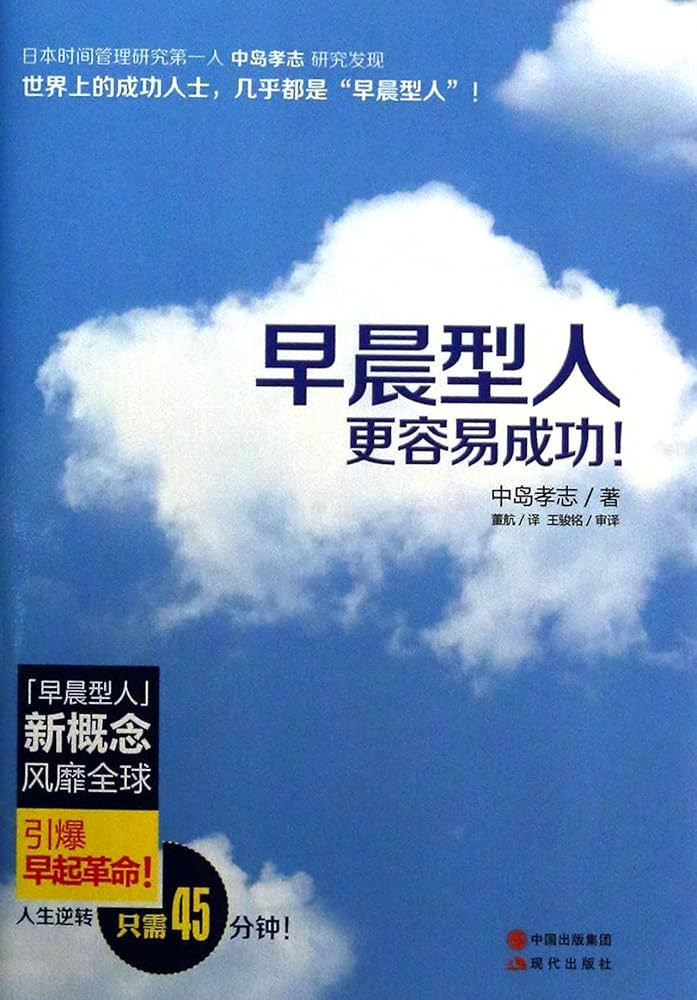

|  |
早晨型人更容易成功 |
第1章 改变人生的“45分钟魔法”——“早晨型人”才能成功！
为什么只有“早晨型人”才能成功？
乐天公司CEO三木谷浩史曾经吐露，“我每天早起1小时学习英语。但如果改成从公司回家后的1小时，则肯定无法坚持下来。”
这就是“早晨型人”。无论饮酒到多晚、身体多疲惫，次日早晨也必定是清爽利落地上班。
成功者的一天从早晨开始！
对于推销员来说，早晨能否提前投入工作将决定事业的成功与失败。
能做好工作的，只有“早晨型人”！
曾有人反驳说：“我们也需要能够连续几天彻夜工作的员工啊。”于是我问道：“那你们公司允许只要通宵工作就可以次日下午才出勤吗？”对方不做声了。通宵工作归通宵工作。但是我认为比起通宵工作更应该提前上班。
只需早起45分钟，效果就会如此不同
某位经营者，他早晨到公司后第一项工作，便是逐一观察员工的表情：“不吃早餐直接到公司的人，其表情没有神采；对凌乱的头发不加整理、头脑昏沉的人，上午没法指望他干活儿。我不想对那些人支付他们上半天的薪水。所以，总是暗中在奖金里予以扣除。”
S型人·P型人·M型人
根据体质，将人分成三种类型：
- “早晨型人”类型。比如，晚上早睡，天亮就醒，这就是“S型人”。
- “夜晚型人”类型。晚上格外精神，通宵也没问题，但是对早起感到困难的人，就是“P型人”。
- “超人型”。无论早晨、夜晚都能保持充沛的精力。
成为“早晨型人”有这么多优势！
- 工作和学习都能提前展开。
- 即使因为事故而中断，也能随后争取到时间予以补救。
- “早晨第一个”约见最容易成功。
- 不用遭受上班高峰。
- 夜晚的饭局应酬因为喝酒等反而额外增加成本。
- 早晨的任何东西都比较便宜（晚上更贵）。健身房和语言学校也推出了早间会员这种特殊打折制度。
- 深夜饮酒以及熬夜等往往会损害健康。
- 早晨的电视节目更具学习性（晚上则是游戏娱乐型居多）。
- 早晨起床较早，则一天时间相对较长。
- 早晨的效率高。
虽然，“往后推托”是个人的自由，但是，“往前调整”却没有任何坏处。
“夜晚型人”能做的和不能做的事情
实际上，“擅长通宵”并不是什么值得自豪的事情，暴露出的只能是“计划性的欠缺”。只要通宵作业，就自我陶醉地认为“我能经受住繁重的工作”，这未免言之有过。
希特勒只因身为“夜晚型人”而导致亡国
“服下药物后，剩下的就是听天由命了。无论发生任何事情，在药物发挥作用期间我都不会醒过来。”
“一国之命运就这样因为如此无聊的事情而被决定……”
“早晨型人”和“夜晚型人”的区别在于生物钟
最佳生活模式应该是早晨5点左右起床，让身心都充满肾上腺素，并且做足准备。为包装早晨5点能够起床，还要向前推算，前一天晚上10点至12点就应该上床睡觉，这才是理想的生活模式。
“8小时睡眠说”的弥天大谎
事实上，反而“短眠派”的精力更加充沛！
医学上“最正确的”睡眠方法是？
无论是“早晨型人”还是“夜晚型人”，只要这一点状态能让自己身体良好，那就是适合自己的生活模式，体内生物钟也不过是主观概念而已，不过是几点到几点必须睡觉的物理时间计测器而已。只要能够舒畅地醒过来，即使只睡5个小时又有何妨呢？
第2章 “早晨型人”能做到的奇迹工作法——你能如此高效率地工作吗？
“纯粹推销员”的时间活用术
职场人士的成功取决于如何利用早晨，这么说并不夸张。因为早晨是工作开始的关键。 我从未有过因时间富余而让自己不知所措的体会。
乘坐始发电车，好处颇多
- 车厢很空。
- 可以做任何事情。小睡片刻、阅读报纸、确认今天的工作安排、撰写书稿。
- 阅读车厢内吊环拉手广告。在运气欠佳没有座位的时候可以从第一节车厢走到最后一节，一个不落地阅读车厢内的广告，并且把感兴趣的记录下来。
- 不会感到疲累。
- 西装也不会褶皱。
早起并不会导致睡眠不足
怒喝“在通勤电车上要进行工作彩排！”的经营者
赶在大家上班之前给自己一段冷静思考的时间。今天究竟要怎样度过？这星期、这个月的重要事项是什么？应该给谁什么样的指示？要具体思考这些事情，更重要的是确认优先顺序。
安排=排序，“太忙了”只是借口
忙碌工作、不惜牺牲个人时间的结果却是工作的成果没有改善。这种类型的“穷忙族”往往难以排列工作的优先顺序。
任何工作都存在3个阶段：
- 计划。规划一下要做什么。
- 安排。明确此项计划该如何实现。预算计划也包括在内。而其中最重要的课题莫过于资金何时到位。
- 操作。应该怎么做？这项工作需要几个人？应该怎样安排分工？必须加以明确后再实施。
一味埋怨“没有时间”“太忙了”的人往往忙于具体的操作。而这样忙乱的操作往往是因为没有合理顺畅地做好计划和安排。
利用好早晨的时间很关键。提早安排日程，则下午的时间就可以空出来，这样即便有突发工作的委托或者突然到访的客户也能够从容应对。我们将这段余裕时间称为“缓冲期”。
翻开记事本，日程满满的人往往有很多都做不好工作。能做好工作的人则肯定会在一天之内预备几个余裕时间段，用这样的缓冲期去应对突然的工作、委托、事故的处理等。这也是不把工作留到明天或者下星期的有力支撑。
为什么“早晨型人”能做好工作？——*注意力会在早晨全面提升！
必须预知头脑运转的时间
饮食是这样影响大脑运转的！
为什么“早晨型人”能做好工作？——*创新力会在早晨全面提升！
日本赚钱第一人，齐藤一人“把昏睡的人赶出去！”
齐藤说：“不能雇佣在会议上睡觉的人。困倦的人也是想不出好创意的。智慧并非是人多就能产生。只要那些有智慧的人来参加会议就行。”
改变时间即获成功的会议
不能在餐后马上进入会议状态。会议应该安排在早晨第一位。具体来说，早晨9点。首先，那时候大家都已经进入工作状态。另外，开会时难免需要准备会议资料，所以会前匆忙慌张的情况不在少数。然而正是这样忙碌紧张的时间，却能将与会人员引导至会议状态。
为什么“早晨型人”能做好工作？——*问题解决力会在早晨全面提升！
早餐前已完成一项工作
邮件的处理绝对是利用早晨时间更好一些
夜间回复的邮件内容往往过于严苛。比如没有按照指示去做，而来询问如何妥善处理的问题，这就不得不让我怒火上心头。我属于瞬间沸腾的类型，往往会把怒气表现在邮件当中。而对方的回信则是在次日上午。看到回信，我总是会反省“自己说的太重了”。这种状况在过去屡有发生。
我也需要经过一番考虑，所以回信要在早晨进行。即使已经整理好回答的内容，也还是要在早晨再次确认后再发送。
为什么“早晨型人”能做好工作？——*人脉交际能力会在早晨全面提升！
早起出勤有这样的优势！
什么样的人会进入裁员名单呢？简单地说就是“缺乏人气的人”。比如“没有关系要好的同事”“孤立的人”“独行侠”，工作虽然出色，但是却常常与上司发生冲突，或者自我意识过强，缺乏与周围的协调性等。
如果你是比较年轻的职场人士，建议从明天开始就努力做到早晨第一个上班，这对于公司人脉关系的构筑具有超群的效果。
他利用“扎荣茨单纯接触原理”，在瞬间抓住人心
比起那些只有一面之缘的人来说，人往往会随着见面两次、3次、5、次、6次这样的次数增加而提升对对方的好感程度。而且，仅仅是打个照面就行。
为什么“早晨型人”能做好工作？——*信用力会在早晨全面提升！
“早晨型人”为何会得到信用？
曾几何时，提起加班，总是会听到“工作到很晚，辛苦了”这样的问候，但这已经是陈年旧事了，在现代社会反而会遭受指责，比如“效率已然低下到要去加班了。把进公司后用掉的电费还回来。”
提起通宵，更是不会得到“他是拼命三郎”的美誉，反而被认为“工作拖沓，所以才不得不加班”，并且成为众矢之的的冷笑对象。
他开始坚持最迟早晨7点半到公司上班。即使每天都这样，他也能在避免过劳死亡的情况下坚持过来。理由只有一个。是因为顽强的精神吗？不，不对。虽然是早晨第一个到公司，但他却会随后在公司里小憩片刻。这是大家公知的事实。公司组织也表示对此不解，“既然如此，在自己家里休息好后，10点左右到公司不就行了么”？所谓组织，除工作之外服务规程也在起着作用。无论工作多么能干的人都不能无视服务规程，是不可以任性妄为的。所以要第一个到公司，在证明自己没有翘班之后，他会谎称在其他会议室有事而去补觉。
不得不这么做，这就是职场人士。
为什么要这么做？因为不想降低自己的信誉。即“无论前一天多么晚，总能早晨第一个到公司”的勤勉精神。这是最大的亮点。
这与前一天多么晚、多么疲惫没有关系。问题是早晨能带着怎样的精神面貌到公司。有很多经营者或者高层“都很关注在前一天饮酒到很晚的情况下，员工次日早晨能几点到公司”。
平日难见分晓，此时方能一睹真容。
如果这个时候迟到或者因身体欠佳而请假的话，无疑会在瞬间就被打上“这家伙不行”的烙印。
相反的，如果到公司的时间比平日还要早，并且等着大家，还主动打招呼说“早上好。昨天谢谢你的款待”，那么，其评价势必会直线飞升，“哦，昨晚喝了那么多，今天居然还这么早。真是个有意志力的人。”
第3章 “早晨型人”能做到的奇迹学习法——居然有这种学习方法？
胸怀梦想的人，其时间总是赤字
摒弃夜生活，取而代之，全面利用早晨的时间。夜晚时间有限，但早晨时间无尽。千万不要混淆这一点。不要认为夜晚无限、早晨有限。合理地管理早晨是在没有时间的情况下挤出时间的唯一方法。
巧妙利用早晨时间的学习法
早晨时间用来学习什么？
- 信息收集。通过电视、杂志、报纸、读书、网络、人脉来进行。
- 取得资格。只要安排合理，就可以取得律师、公认会计师、税理士等高难度资格，还可以取得金融理财师、物理疗法士等资格。
- 学习外语。
- 拓展人脉。很多人往往错误地认为缺少晚上的饭局是很难拓展人脉的。
- 增进健康。早晨的散步、慢跑、健身房来发汗。
信息是大脑的最佳营养
对于人来说，信息重于任何高营养价值的佳肴。
不能认为“这是我所在行业的信息，所以要关注一下”，还应该普遍关注那些“虽然看似无关，但是饶有趣味”的信息，它们一定会在某个地方派上用场的。
从早晨5点钟的节目中获取信息！
早报只需粗读就OK！
中岛流的“读报法”
在浏览不同报纸的时候会进行比较阅读，对头版头条报道的区别进行确认。 不能认为“凡是报纸上报道的都是正确的”。这其中必定有报社根据其意向、思想、立场以及盲点所做除掉信息“加工”。 我是不读晚报的，这一点请诸位参考。既然不读，也就不订阅。产经新闻已经废止了晚报，而我从很久以前就不读什么晚报了，因为晚报上的信息全部可以通过电视机来获取。
中岛流的“信息整理法”
剪报。收集你好奇的、感兴趣的、想要关注的报道就行，没有限制。要把剪报碎片加以活用，有很多简报信息都能够成功确立企划、商品开发以及市场营销的灵感线索。
请教YAMATO宅急便小仓昌南（原社长）时，他会说是借鉴了做牛肉盖饭的吉野家。当时，吉野家以迅猛的气势在全国范围内开起了店铺，当然，报纸也是每天不断地对其加以报道。 就因为是单品管理，所以才能在瞬间展开。如果菜单品目繁多，则中央集中厨房的做法就很难应付，也就不能如此快速地展开。 即使复制同行业者的成功，那也不过是模仿前人而已，如果能借鉴其他行业的想法，就能够推出全新的体制。而且仅仅是通过报纸记事，就能够做到这一点。
作为参考告知大家，我自己的剪报一直分放在50个整理箱里。而且全部复印，用A4纸统一其大小。因为报纸存放数日后便会泛黄变旧，复印件能一直保持整洁。日后阅读时，只需用曲别针加以固定，便能作为小册子携带，在电车内阅读起来也很方便。
在早晨的通勤电车里进行学习
通勤电车内的学习法
- 读书。乘车时的读物是撕开之后的书籍。
- 利用iPad。比如经济问题、经验论等。
他在通勤电车里创造了世界纪录
- 撰稿。
- 冥想、思索。
- 预习工作。确认“今天要做的事”“要对部下做出指示的事”“要向上司确认的事”“要与其他部门协调的事”“要和客户联络的事”等。
- 车厢内参观1。车厢内的吊环拉手广告、新刊杂志的内容字大而醒目。
- 车厢内参观2。我的某位朋友是位编剧，它会通过听取这些对话来提炼台词。而且一旦养成习惯，甚至会在会议或谈判中关注其他人的言论。圣德太子估计也专门针对这一点进行过训练。当然，还要密切关注潮流。
- 能力开发。记忆术、尝试记忆圆周率。
- 培养联想力、构思力。
“晨读”有助于开发职场人士的能力
在简历筛选阶段，资格重于实力
资格会带来以下两个好处：
- 对外宣传。往往仅在名片上印制中小企业诊断士、金融理财师（FP）等字样就会让对方产生“原来如此”的信任感。
- 对内宣传。松本清药局会大量雇用药剂师，且其资格补贴每月高达10万日元。如此一来，公司内部就会形成努力取得药剂师资格的风气，而且这也有利于药学部毕业生的录音。除药剂师资格外，还有英语“资格”。
要在早晨为取得资格而备考
早晨时间最适于学习外语
学习要在想到时马上付诸行动。所以，要学习，就要在没有干扰的早晨集中学习。特别是如果意识到自己意志薄弱、容易受到外界诱惑的话，更要这样做。
早晨先进行英语淋浴
早晨要收看CNN。卫星电视也可以收看。一边吃早餐一边收看。如果是和家人共同收看，那么展开评论也是可以的。当然，也可以在通勤电车中通过随身听来学习。
只要有电子词典，就可以随时学英语
- 有了电子词典，在哪里都能确认。
- 如果能够活用电子词典的跳查功能，词汇量就能够像倍增游戏般丰富起来。
- 电子词典体积小，方便携带。
- 身处黑暗环境也能利用电子词典。
- 电子词典也适用于TOEIC、TOEFL的备考学习。
如果这样还不够，那还有“早间学校”！
欧美精英的时间观念！
“我珍惜和家人在一起的时间，所以想尽快做完能在飞机上处理的工作。这样就可以多些时间陪家人吃饭。”
“早餐会议”是常识
可以尝试早晨早起，或者提前一天住在酒店，利用一下酒店的咖啡厅。应该能够看到那些只有在电视、报纸、经济杂志上才能看到的世界政财界的大人物居然就坐在自己的旁边喝着咖啡的情景吧。
通过早晨学习会，同时实现信息的收集和人脉的拓展！
我曾在下班后主办过学习会。其主要内容是，在每月一次的恒定例会上，邀请客座讲师（主要是当时颇受关注的经营者），宣讲其经营观和人生观。随后以相互了解和认识为目的，举办信息交换晚会、名片互换会。这是我从上班时起就有的爱好，也完全是义务地在做这件事。
人因他人而学习。在人群中成长。向他人学习后才会恍然大悟。
全国到处都有早间学习会
早晨6点，首先开始齐声诵念。当然我是完全不知道其内容的。虽然我知道他们在说着精彩的事情，但是却有某种宗教团体的感觉。在这个会议上最让我饱受冲击的是，那些寻求人才的人、渴望良缘的人、稍微夸张些地说就是“希望今天的自己比昨天能够更加向前迈进一步”的人本身就是善结良缘的丘比特。
早间学习会有如下好处：
- 希望早晨学习的人对任务事物都持有积极的意愿！
- 因为没有酒精的麻醉而显得很纯粹！
- 出乎意料地游很多政治家以及经营者。
第4章 “早晨型人”能做到的奇迹赚钱法——早起成就亿万富翁！
“早餐前赚一笔”的早晨型人
“既然无论如何都有第一个到公司，那就可以早晨5点钟到公司后睡一会儿。排在第二、第三的往往就像没什么作用的茶叶渣” —— 福富太郎
利用早晨拜访铸就信赖！
从早晨起信息便充满整个世界
早起不止三分利。
“早起了股市也不开啊？”
是的。但是，我们可以从世界上任何地方买入股票。只要连通网络，点击“买入”便可。
被投资谎言欺骗的老人终于成功复仇！
针对“早晨型人”的股票投资法
通过逆指数在上班前以1000日元“买入”，在990日元时予以“卖出”。换言之，买份保险。结果到公司后发现已涨至1000日元以上，如此一来，稳赚不赔。而即使出现下跌，只要利用逆指数不卖出便无大损失。逆指数可以帮助我们用最小的风险解决问题。
“早晨型人”可以自由自在地从事副业
送牛奶的人比喝牛奶的人健康。
因《我是什么》而荣获芥川奖的作家三田诚广，就从孩子的备考生活中获取了备考的智慧和诀窍，并归纳为《爸爸塾长——父子考中学》进行了出版。
第5章 这样做，就能从今天开始变为“早晨型人”！
只要加以习惯化，就能做成任何事情！
能成功的人往往有好的习惯，而不能够成功的人却不良习惯缠身。
能够成功的人具备以下3大习惯：
- 头脑灵活，具有积极接受一切良好事物的习惯。
- 对得失损益、善恶良莠马上做出判断的习惯。
- 只要认为是好事便会马上付诸行动的习惯。
如果是这样，大家都能尽早变为“早晨型人”
这就是“早晨型人”的改造计划！
- 自我强迫。能不能马上就起床呢？实际上根据早晨的起床形态可以判断他能否成为决断型领导者。
- 让自己无法逃避。把重要工作、与关键人物的面谈、出差的飞机以及新干线等的预订等全部定为早晨的时间。
如果喜欢，就能够早起！
- 找出乐享其中的部分。从自身角度找出能够认为“早晨是美好的！”的方法。
- 有效用于和家人的交流。
- 缩短上班出发前的流程。
用最短时间处理从起床到出勤的方法
- 起床的同时洗淋浴。
- 剃须刀用电动的。
- 通过广播和电视获取新闻。
- 提前确定本周的所有套装。
- 在玄关处放个小件物品收纳盒。
- 早餐要在全部准备好之后再吃。
“早餐前1小时”的奇迹，造就了职场人士的成功
- 把床当书桌。在睡觉之前整理好次日早晨要查阅的参考文献、荧光笔和便签纸。
- 全面活用录像带。
- 一边泡澡一边读书。
我的友人是女子大学的教授，他出版了《在浴缸里阅读的古典系列》一书，其结构是把书本浸在水里，文字便会浮现。幼儿的戏水玩具中也有这样的商品，当表示“会有人偷懒到这种程度吗”时，他的回答颇为得意，“这其实受到了考生以及中年职场人士的热力追捧”。
- 从泡澡开始展开电话销售。
掌握短眠法，就能成为“早晨型人”！
因为没有睡眠时间所以不能成为“早晨型人”，希望以此为辩词的人能够尝试他们的短眠法。
不要浪费长达“2万小时！”的周末的早晨
中岛流的“周末早晨的利用法”
我本人就对周末做了各种灵活的使用。比如，前面提到的对报纸、杂志等的信息的整理就是其中之一，把这周的信息全部放在周末再全面重新整理以此。
有2万小时，便能实现任何梦想！
能够成功的人在想到“这个很好！”的时候，会马上将其习惯化，而不能够成功的人即使想到“这个很好！”，也不会将其习惯化，而是在度过余生时仍然继续以前的陋习。
成功人士如何度过周末的早晨？
有趣的是，休息的时候充分休息，工作的时候全力工作——即“张弛派”多为“早晨型人”。而与此相对，无论工作日还是周末都同样状态的“拖沓派”却多为“夜晚型人”。
在年轻员工看来，更是会战战兢兢地认为“如果成为他的部下或者后辈，肯定会被强制做同样的事情”。
能够成功的人，其周末的活法与工作日是截然不同的。
书中的道理很直白，差点儿就不想看了，所幸篇幅短小坚持读完了。后来发现文章中的道理时常浮现脑海，时不时地给偷懒时的我一记警钟！